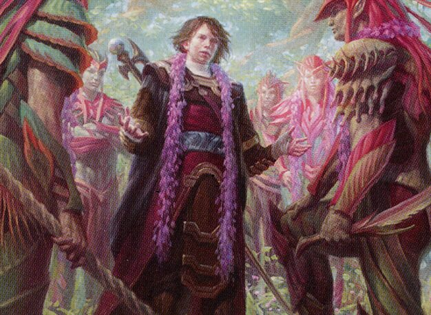

Teval, the Balanced Scale
Solides Mittelfeld
Das Deck gewinnt 24 % seiner Partien – der Schnitt am Vierertisch liegt bei 25 %.
- Stufe · Elo
- B 1524 Platz 29 von 64 in der Rangliste bis 300 €
- Siegquote
- 24 % 70,2 Siege in 291 Partien, mit 90 % Sicherheit zwischen 20 und 28 %
- Platzierungen
- 128 %11×
- 225 %10×
- 330 %12×
- 418 %7×
Dort ein neues Deck anlegen und die Liste beim Import einfügen.
- Preis
- 290,57 €von 300,00 €
- Partien
- 291in 29 Turnieren
- Karten
- 10036 Länder, davon 14 Standard
- Game Changer
- 2höchstens 3 erlaubt
- Kombos
- 4komplett im Deck
- Regelcheck
- Bestanden100 Karten, Farben, Bannliste
Höchstens 300 € inklusive Commander. Steigen die Preise darüber, wird die Kaufliste automatisch neu gebaut.
Die Kaufliste wurde am 04.11.2026 mit aktuellen Preisen neu gebaut: Die getestete Fassung kostete inzwischen 300,96 € und lag damit über 300,00 €. Siegquote und Platzierung stammen von der getesteten Fassung.
Stärken und Schwächen
Aus 271 ausgewerteten Partien in 27 Turnieren (mit den Listen, die im Turnier gespielt wurden). Partien am Zeitlimit zählen wie in der Rangliste nicht. Werte in Klammern: Schnitt aller Decks derselben Preisklasse. Die genauen Zahlen siehst du, wenn du mit der Maus auf einen Punkt zeigst oder ihn antippst.
Spielweise: gewinnt über den Kampf – 77 % des Schadens an Gegnern ist Kampfschaden · So gewinnt es: 25 % der Siege durch Überleben – die Gegner schalteten sich gegenseitig aus (Schnitt aller Decks: 33 %)
Stärken
- Gewinnt auch ohne Commander sicher31 % Siege in Partien, in denen er nie kam · 13 Partien ohne, 258 mit Commander
Schwächen
- Lässt viel Mana liegen sicher33 % der Länder wurden in einem Zug nicht genutzt (Schnitt aller Decks: 25 %) – meist war die Hand leer oder die Karten passten nicht · gemessen in den eigenen Zügen 3–8, 140 Partien
- Wird oft als Erstes ausgeschaltet sicherin 35 % der Partien (Schnitt aller Decks: 25 %) · 94 von 270 Partien
- Tut sich schwer gegen Flieger Hinweis6 % Siege wenn mindestens 40 % der gegnerischen Kreaturen fliegen oder Reichweite haben, 28 % bei höchstens 15 % (Schnitt aller Decks: 19 % zu 26 %) · 18 / 149 Partien
Gegen wen es gewinnt
Siegquote an Tischen, an denen dieser Commander mitspielte – nur Gegner aus der aktuellen Rangliste mit mindestens 20 gemeinsamen Partien. Am Vierertisch liegt der Schnitt bei 25 %.
Gewinnt oft gegen
 35 %von 20
35 %von 20 30 %von 20
30 %von 20 30 %von 20
30 %von 20
Tut sich schwer gegen
 10 %von 21
10 %von 21
10 %von 20 12 %von 24
12 %von 24
Spielstil
Friedhof
Automatisch aus der Deckliste: wofür die Karten da sind, verglichen mit allen getesteten Decks. 80 % heißt: mehr davon als 80 % aller Decks.
Mit einem anderen Commander vergleichen
Commander (1)
- Teval, the Balanced ScaleKombo6,89 €
Kreaturen (31)
- Icetill Explorer Ramp24,63 €
- Colossal Grave-Reaver12,67 €
- Sylvan Safekeeper SchutzKI kann nicht6,87 €
- Deathrite Shaman Removal6,51 €
- Six4,39 €
- Jarad, Golgari Lich Lord3,55 €
- Birds of Paradise Ramp3,00 €
- The Scarab God Removal2,50 €
- Hedron Crab2,42 €
- Ob Nixilis, the Fallen2,32 €
- Meren of Clan Nel Toth1,96 €
- Aftermath Analyst1,24 €
- GravecrawlerKombo1,08 €
- Tormod, the DesecratorKombo1,06 €
- The Gitrog Monster Ramp1,05 €
- Wonder0,91 €
- Eternal WitnessKombo0,85 €
- Skull Prophet Ramp0,79 €
- Muldrotha, the Gravetide0,77 €
- Sidisi, Brood Tyrant0,74 €
- Avenger of Zendikar0,66 €
- Kotis, Sibsig Champion0,49 €
- Stitcher's Supplier0,43 €
- River Kelpie Kartenziehen0,33 €
- Sakura-Tribe Elder Ramp0,32 €
- Shigeki, Jukai Visionary Ramp0,32 €
- Timeless Witness0,24 €
- Kheru Goldkeeper RampKombo0,21 €
- Kishla Skimmer Kartenziehen0,15 €
- Tatyova, Benthic Druid Kartenziehen0,13 €
- Reassembling SkeletonKombo0,10 €
Spontanzauber (8)
- Crop Rotation RampGame ChangerKI schwach3,66 €
- An Offer You Can't Refuse Removal3,22 €
- Assassin's Trophy Removal1,20 €
- Harrow Ramp0,23 €
- Tear Asunder Removal0,23 €
- Lethal Scheme Removal0,22 €
- Putrefy Removal0,11 €
- Grapple with the Past0,05 €
Hexereien (12)
- Reanimate8,43 €
- Life from the Loam5,11 €
- Living Death Board WipeKomboKI schwach4,19 €
- Will of the Sultai2,61 €
- Afterlife from the Loam1,22 €
- Farseek RampKI schwach0,59 €
- Victimize0,54 €
- Dread Return0,39 €
- Welcome the Dead Kartenziehen0,29 €
- Necromantic Selection Board Wipe0,23 €
- Rampant Growth Ramp0,15 €
- Treasure Cruise Kartenziehen0,15 €
Artefakte (6)
- Phyrexian AltarKomboKI schwach38,00 €
- Lightning Greaves Schutz3,23 €
- Hedge Shredder2,15 €
- Conduit of Worlds1,48 €
- Sol Ring Ramp0,74 €
- Arcane Signet Ramp0,36 €
Verzauberungen (6)
- Rhystic Study KartenziehenGame Changer38,17 €
- Teval's Judgment Ramp10,00 €
- Ripples of Undeath6,81 €
- Tortured ExistenceKomboKI kann nicht3,59 €
- Phyrexian ReclamationKI kann nicht1,98 €
- Insidious Roots RampKombo1,80 €
Länder (36)
- Polluted Delta18,62 €
- Watery Grave7,64 €
- Overgrown Tomb6,86 €
- Breeding Pool6,76 €
- Shifting Woodland5,62 €
- Undergrowth Stadium4,96 €
- Command BeaconKI kann nicht4,21 €
- Llanowar Wastes1,04 €
- Dreamroot Cascade0,99 €
- Woodland Cemetery0,99 €
- Hinterland Harbor0,32 €
- Cephalid ColiseumKI schwach0,24 €
- Darkwater Catacombs0,23 €
- Sunken Hollow0,23 €
- Exotic Orchard0,19 €
- Command Tower0,18 €
- Drownyard Temple0,17 €
- Golgari Rot Farm0,17 €
- Opulent Palace0,16 €
- Foreboding Landscape0,13 €
- Memorial to Folly0,09 €
- Terramorphic Expanse0,06 €
- 6× Swamp
- 6× Forest
- 2× Island
Welche Karten Siege bringen
Aus 271 Partien dieses Decks (Schnitt 24 % Siege): Wie oft es gewonnen hat, wenn die Karte in der Partie gespielt wurde – verglichen mit den anderen gespielten Karten des Decks. 0 = normal, Plus = bringt mehr Siege. Nur Karten, die mindestens 20-mal gespielt wurden. Teure Karten, die spät kommen, sehen oft etwas besser aus, weil man dafür lange genug überleben muss.
| Karte | Partien | Siege, wenn gespielt | gegenüber den anderen Karten |
|---|---|---|---|
| Colossal Grave-Reaver | 33 | 42 % | +13 |
| Life from the Loam | 27 | 41 % | +11 |
| The Gitrog Monster | 50 | 40 % | +11 |
| Jarad, Golgari Lich Lord | 36 | 39 % | +9 |
| Victimize | 26 | 38 % | +9 |
| The Scarab God | 47 | 38 % | +9 |
| Avenger of Zendikar | 34 | 38 % | +9 |
| Insidious Roots | 29 | 38 % | +8 |
| Living Death | 30 | 37 % | +7 |
| Sakura-Tribe Elder | 44 | 36 % | +7 |
Alle 57 Karten zeigen
Upgrade auf bis 400 €
Du hast dieses Deck bis 300 €? Das getestete Deck bis 400 € spielt diese Karten anders – oben die, mit denen es am häufigsten gewinnt.
6 Karten anders · +99,89 € · Platz 29 → Platz 30
- Misty Rainforest26,11 €
- Verdant Catacombs24,98 €
- Field of the Dead23,27 €
- Underground Mortuary16,13 €
- Altar of Dementia13,06 €
- Toxic Deluge3,43 €
Dafür raus (6)
Aftermath Analyst, Darkwater Catacombs, Drownyard Temple, Golgari Rot Farm, Shigeki, Jukai Visionary, Undergrowth Stadium
Starthand ziehen
Sieben zufällige Karten aus diesem Deck – so siehst du, wie sich der Start anfühlt. Der Commander liegt wie im Spiel nicht im Stapel.
Kombos im Deck (4)
Laut Commander Spellbook mit dieser Kartenliste möglich. Was eine Kombo genau braucht, steht dort. Ob eine Kombo in Partien wirklich zusammenkam, steht im Reiter „Partien“.
- Phyrexian Altar + … → ∞ LTB-Auslöser von Kreaturen, ∞ ETB-Auslöser von Kreaturen, ∞ Opfer-Auslöser von Kreaturen
7 Fassungen, dazu passt jeweils eine von: Reassembling Skeleton · Tortured Existence · Teval, the Balanced Scale · Insidious Roots · Tormod, the Desecrator · Kheru Goldkeeper - Gravecrawler + Phyrexian Altar → ∞ Sterbe-Auslöser, ∞ ETB-Auslöser von Kreaturen, ∞ LTB-Auslöser von Kreaturen
- Kheru Goldkeeper + Tortured Existence → ∞ Abwurf-Auslöser
- Living Death + Eternal Witness + Phyrexian Altar → ∞ Blinken, ∞ farbiges Mana, ∞ Sterbe-Auslöser
Commander Spellbook führt 10 Einträge, weil jede Fassung einzeln zählt (zum Beispiel mit einem anderen Opfer-Ziel). Hier zählt jede Kombo einmal.
Alle 10 Einträge anzeigen
- Gravecrawler + Phyrexian Altar → ∞ Sterbe-Auslöser, ∞ ETB-Auslöser von Kreaturen, ∞ LTB-Auslöser von Kreaturen
- Kheru Goldkeeper + Tortured Existence → ∞ Abwurf-Auslöser
- Living Death + Eternal Witness + Phyrexian Altar → ∞ Blinken, ∞ farbiges Mana, ∞ Sterbe-Auslöser
- Tortured Existence + Phyrexian Altar + Teval, the Balanced Scale → ∞ LTB-Auslöser von Kreaturen, ∞ ETB-Auslöser von Kreaturen, ∞ Opfer-Auslöser von Kreaturen
- Tortured Existence + Phyrexian Altar + Insidious Roots → ∞ LTB-Auslöser von Kreaturen, ∞ ETB-Auslöser von Kreaturen, ∞ Opfer-Auslöser von Kreaturen
- Tortured Existence + Phyrexian Altar + Tormod, the Desecrator → ∞ Sterbe-Auslöser, ∞ ETB-Auslöser von Kreaturen, ∞ LTB-Auslöser von Kreaturen
- Phyrexian Altar + Reassembling Skeleton + Tormod, the Desecrator → ∞ LTB-Auslöser von Kreaturen, ∞ ETB-Auslöser von Kreaturen, ∞ Opfer-Auslöser von Kreaturen
- Phyrexian Altar + Insidious Roots + Reassembling Skeleton → ∞ LTB-Auslöser von Kreaturen, ∞ ETB-Auslöser von Kreaturen, ∞ Opfer-Auslöser von Kreaturen
- Phyrexian Altar + Reassembling Skeleton + Teval, the Balanced Scale → ∞ LTB-Auslöser von Kreaturen, ∞ ETB-Auslöser von Kreaturen, ∞ Opfer-Auslöser von Kreaturen
- Phyrexian Altar + Kheru Goldkeeper + Reassembling Skeleton → ∞ LTB-Auslöser von Kreaturen, ∞ ETB-Auslöser von Kreaturen, ∞ Opfer-Auslöser von Kreaturen
Die Partien in Zahlen
- Commander gewirkt
- 100 %der Partien, in 39 % bis zum 4. Zug
- Schaden je Partie
- 28Schnitt: 29
- Siege im Schnitt
- Zug 11,8eigener Zug, Schnitt: 11,9
- Als Erstes ausgeschieden
- 35 %94 von 270 Partien, Schnitt: 25 %
- Zu wenig Länder
- 8 %der Partien, davon 7 gewonnen, Schnitt: 9 %
- Mulligans
- 6 %16 in 271 Partien, Schnitt: 7 %
Karten mit messbarem Einfluss
Ein Zusammenhang, kein Beweis: Diese Karten kamen in Siegen deutlich öfter ins Spiel.
- Syr Konrad, the Grim – gewonnen in 40 % der Partien, in denen sie gewirkt wurde (52), sonst 20 %
- The Gitrog Monster – gewonnen in 40 % der Partien, in denen sie gewirkt wurde (50), sonst 20 %
- Colossal Grave-Reaver – gewonnen in 42 % der Partien, in denen sie gewirkt wurde (33), sonst 21 %
Was die Partien zeigen
Aus 271 ausgewerteten Partien in 27 Turnieren (mit den Listen, die im Turnier gespielt wurden). Partien am Zeitlimit zählen wie in der Rangliste nicht. Werte in Klammern: Schnitt aller Decks derselben Preisklasse. „sicher“: steht so im Spielprotokoll. „Hinweis“: kommt immer wieder vor, ist aber kein Beweis.
Schaden pro Partie alle Partien
Schaden an Gegnern pro Partie, gerechnet über alle 271 Partien – was die Karte insgesamt beiträgt
- Syr Konrad, the Grim Ø 6,9traf in 63 von 271 Partien
- Teval, the Balanced Scale Ø 6,5traf in 174 von 271 Partien
- Zombie Druid Token Ø 2,0traf in 70 von 271 Partien
Schaden bei Einsatz wenn sie trifft
Gesamtschaden ÷ Partien, in denen die Karte Schaden gemacht hat – ihre Stärke im Einsatz
- Syr Konrad, the Grim Ø 29,5traf in 63 von 271 Partien
- Plant Token Ø 28,2traf in 19 von 271 Partien
- Teval, the Balanced Scale Ø 10,1traf in 174 von 271 Partien
Top-Finisher schaltet Gegner aus
Karten, die am häufigsten einen gegnerischen Commander aus der Partie genommen haben
- Zombie Druid Token 50×271 Partien im Deck
- Syr Konrad, the Grim 31×271 Partien im Deck
- Plant Token 27×271 Partien im Deck
Beste Interaktion räumt auf
Gegnerkarten, die beim Auflösen dieser Karte zerstört, verbannt, zurückgeschickt oder neutralisiert wurden (ohne Spielsteine)
- Necromantic Selection 207×Ø 0,8 pro Partie · 271 Partien im Deck
- Living Death 206×Ø 0,8 pro Partie · 271 Partien im Deck
- Assassin's Trophy 51×Ø 0,2 pro Partie · 271 Partien im Deck
Größte Hindernisse blockt am meisten
Gegnerische Karten, die die Angreifer dieses Decks am häufigsten geblockt haben – insgesamt 17 % der 3620 Angreifer geblockt, davon 13 % durch Flieger oder Reichweite
- Squirrel Token 21×blockte in 5 Partien
- Plant Token 20×blockte in 5 Partien
- Bird Token 14×blockte in 3 Partien
Selten gewirkt Kandidaten zum Tauschen
Karten dieser Liste, die in ihren Partien am seltensten gewirkt wurden – oft zu teuer oder zu langsam (Länder ausgenommen)
- Conduit of Worlds 8 %gewirkt in 23 von 271 Partien
- Timeless Witness 9 %gewirkt in 25 von 271 Partien
- Victimize 10 %gewirkt in 26 von 271 Partien
Siege nach Zug Tempo
In welchem eigenen Zug die 64 Siege kamen
- bis Zug 72 %
- Zug 8–96 %
- Zug 10–1139 %
- Zug 12–1336 %
- ab Zug 1417 %
Kombos im Spiel sicher Gravecrawler + Phyrexian Altar: alle Teile gewirkt in 0 Partien, davon 0 gewonnen · Kheru Goldkeeper + Tortured Existence: alle Teile gewirkt in 0 Partien, davon 0 gewonnen · Living Death + Eternal Witness + Phyrexian Altar: alle Teile gewirkt in 0 Partien, davon 0 gewonnen · Tortured Existence + Phyrexian Altar + Teval, the Balanced Scale: alle Teile gewirkt in 0 Partien, davon 0 gewonnen
Elo-Verlauf
Elo nach jedem Turnier, älteste links. Gestrichelt: Stufengrenzen S, A, B, C.
Jetzt 1524, am höchsten 1594 (27.10.), am niedrigsten 1469 – aus 29 Turnieren.
Letzte Partien
Platz in jeder Partie zu viert, älteste links: Gold = Sieg, Silber = 2, Bronze = 3, rot = 4, Ring = Remis.
4311314212131413344323213223232413141322In den letzten 40 Partien 11× Sieg, 10× Platz 2, 12× Platz 3 und 7× Platz 4.
Manakurve ohne Länder
Durchschnitt 3,21
Aufgaben im Deck
Anzahl / Richtwert aus dem EDHREC-Durchschnittsdeck (der Strich), rot heißt deutlich darunter. Strategie: die übrigen Karten ohne eine dieser Aufgaben, etwa die Kreaturen und Effekte, um die sich das Deck dreht. Zusammen 63 Karten ohne Länder.
Kartentypen
- Kreaturen31 %31
- Spontanzauber8 %8
- Hexereien12 %12
- Artefakte6 %6
- Verzauberungen6 %6
- Länder36 %36
Teuerste Karten
Was das Programm gelernt hat
In jedem Turnier testet das Deck eine Karte. Ein Urteil gibt es erst ab 40 Partien mit und ohne die Karte. Weil das Deck jedes Turnier mit aktuellen Preisen und Daten neu gebaut wird, können getestete Karten später wieder herausfallen.
- kein klarer Unterschied Millikin statt Wight of the Reliquary · Siegquote 24 % mit, 24 % ohne (141 / 150 Partien) · aus einer früheren Fassung, heute nicht im Deck
5 weitere getestete Karten sammeln noch Partien.
Kaufliste für Cardmarket
Liste kopieren, auf Cardmarket unter „Wants“ eine neue Liste anlegen und einfügen.
Zusammen 290,57 € Cardmarket-Durchschnitt vom 24.11.2026
Cardmarket Wants öffnenPreise ohne Versand. Einzelne Karten können bei Cardmarket inzwischen teurer oder günstiger sein.
Gespielt von der Forge-KI, zu viert. Ein durchschnittliches Deck gewinnt 25 %. Wie wird getestet?